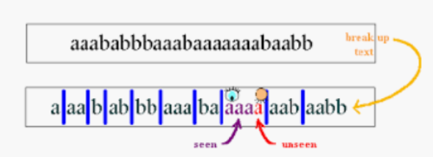
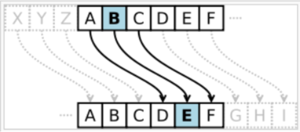
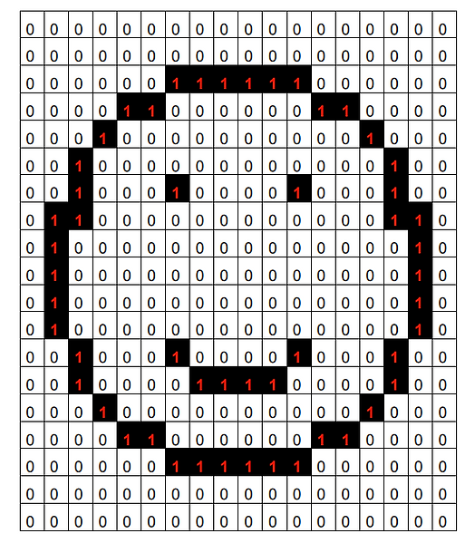

Teoría de la información
La teoría de la información, también denominada teoría matemática de la comunicación, se centra en el
estudio de la transmisión de datos, su procesamiento y la medición de la información. La base de su
teoría queda representada por el emisor y el receptor. Según manifestaron, el mensaje va del emisor al
receptor a través del canal elegido para que se lleve a cabo ese proceso de comunicación.
Esta teoría se centra especialmente en investigar y medir la información, además de valorar los sistemas
de comunicación que existen para transmitir de forma óptima esos datos informativos.
Compresión
La compresión puede ser un proceso físico o mecánico que consiste en someter a un cuerpo a la acción de
dos fuerzas opuestas para que disminuya su volumen. Se conoce como esfuerzo de compresión al resultado
de estas tensiones. Una de las técnicas que las computadoras utilizan para comprimir texto es el
principio de
apuntadores a secuencias previas del escrito.
La técnica técnica de apuntadores se denomina codificación Ziv-Lempel (LZ) y en la actualidad se conoce
como ZIP.

Validación
Es el proceso de garantizar que los datos se hayan sometido a una limpieza de datos para garantizar que
tengan calidad de datos, es decir, que sean correctos y útiles. A la hora de recopilar o utilizar
información, es muy importante que los datos sean coherentes y adecuados para las tareas que necesitemos
realizar. En este sentido, la validación de datos es fundamental.
Encriptación
La encriptación es un método de codificación de datos (mensajes o archivos) de modo que solo las partes
autorizadas puedan leer la información o acceder a ella. La encriptación utiliza algoritmos complejos
para codificar la información que se envía. Una vez recibida, la información se puede descifrar con la
clave proporcionada por el emisor del mensaje. La eficacia de la tecnología de encriptación está
determinada por la fuerza del algoritmo, la longitud de la clave y la idoneidad del sistema de
encriptación seleccionado.

Ejercicios

-
Compresión en bloques de ceros y unos por renglón

-
Canción Favorita

-
Esquema de paridad
¿Puede la tecnología del metaverso mejorar la eficiencia de la inteligencia artificial-humana?
El metaverso es la innovación tecnologica a futuro, donde se prevee una nueva era en la
conectividad digital, combinada con la blockchain y la IA (inteligencia artificial), la RV
(realidad virtual) y la RA (realidad aumentada), conocidas colectivamente como experiencias de
RX (realidad extendida). Un metaverso es un mundo virtual en 3D al que se accede a través de
unos auriculares de RV. Los usuarios pueden navegar por este mundo a través de sus movimientos
oculares, comandos de voz y controladores de retroalimentación
La IA se refiere a las máquinas que simulan los procesos de la inteligencia humana, por ende es
una rama de la informática centrada en la construcción de máquinas inteligentes capaces de
imitar la inteligencia humana. Los algoritmos de los sistemas de IA analizan cantidades
colosales de datos de entrenamiento etiquetados en busca de correlaciones y patrones, y utilizan
estos patrones para hacer predicciones de un movimiento o acción en especfico.
¿Cómo funcionan juntos AI, blockchain y XR?
XR ha creado un mundo virtual que nunca antes había existido. Blockchain aporta
descentralización, lo que se traduce en la eliminación de la autoridad de gobierno centralizada,
transparencia y transacciones irreversibles. Por lo cual se puede clasificar en dos partes:
-
Los tokens no fungibles (NFT):
Son un componente central del metaverso, son un producto de la blockchain. Todos los
objetos del metaverso —tierra, vehículos, barcos, artículos de regalo— son también
básicamente NFT. Si se eliminan los NFT, el metaverso se desmorona
-
La inteligencia artificial en el metaverso:
En este caso la IA permite superar obstáculos como la mala calidad interactiva y
crear nuevos productos, como conferencias virtuales en directo. Esto no solo
facilita la vida de los avatares, sino que hace que los juegos sean más dinámicos,
las interacciones más atractivas y los negocios más exitosos.
En conclusión la relación entre la IA y el metaverso es que los sistemas de IA
conversacional en el metaverso se asemejan a la comunicación entre humanos, por lo cual
esta aporta a que las interaciones sean lo mas real posible. El asistente de voz llegado
a los metaversos de la nueva era, impulsa casos de uso como la asistencia en el estilo
de vida y las recomendaciones personalizadas, gracias a la ayuda
de un bot impulsado por la IA. El procesamiento del lenguaje natural en el metaverso lo
hace más personal que el mundo
real.
IA de voz puede interpretar las peticiones de los avatares en un lenguaje más
humano y natural, teniendo en cuenta los gustos y preferencias individuales. La
tecnología del habla se ha vuelto más contextual y personalizada, haciendo que la
interfaz del metaverso sea más inteligente en el proceso. Por ejemplo, Kai, el primer
conserje de IA en Meetkai, ha hecho que la asistencia por voz sea tan fácil como hablar
con un amigo. Pide una receta de "filete" diciendo: "Oye Kai, ¿puedes encontrarme una
buena receta?". Y recibirás la receta de bistec más deliciosa del mundo en cuestión de
segundos, un poco parecido a lo que hoy conocemos como Siri o Alexa.